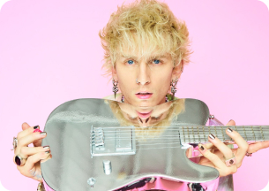
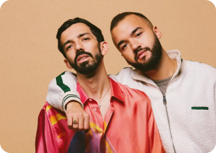
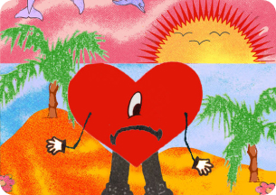
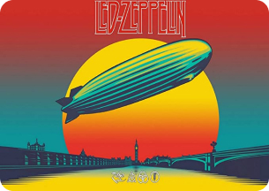
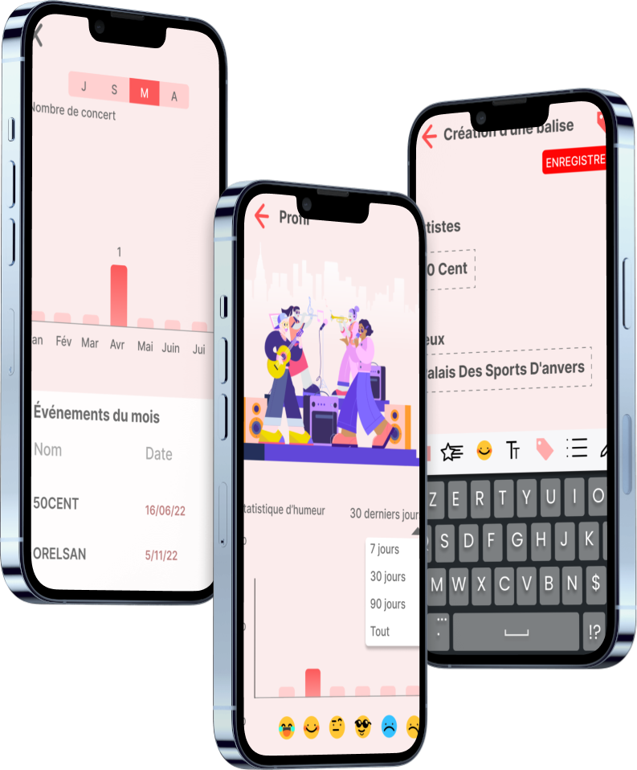

Keep a Record
Ne manquez plus vos évènements musicaux
Les évènements musicaux en Belgique n'auront plus de secret pour vous !
Vos artistes préférés viennent de loin pour voir un public belge phénoménal !
Découvrez donc un large panel musical dans les recherches, en voici quelques extrait attrayant !




Pourquoi Keep a Record ?
Keep a Record est une application qui répond beaucoup aux besoin des amateurs de musiques dans le domaine de l'évenementiel en Belgique. Son nom provient de l'expression garder une trace, en anglais, elle est en lien avec la fonction rappel de l'application, qui vous envoie une notification avant la date de l'evenementiel.


Large panel d'artistes
Sa bibliothèque composés d'artistes vous informe de manière pratique les prochaines tournées de vos artistes.

témoignages
Les témoignages des utilisateurs captivés par le concept Keep a Record
Design très moderne, et la fonction rappel va très bien avec le concept.
Le concept est super et les dates de concert correspondent et sont à jour !
Le thème est concret, l'application est plus ergonomique et donc, l'ensemble est bien plus attrayant et plus agréable à l'oeil.
Rejoignez-nous !
En nous rejoignant vous permettez à l'application de garder une trace ce qui en va de même pour vous !
